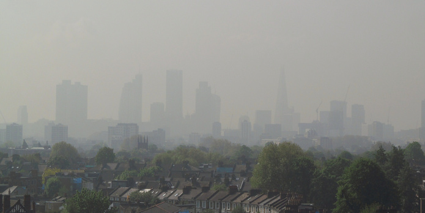

How to build the data infrastructure to tackle urban air pollution
Addressing urban air quality is a huge challenge, and strategies to regulate pollution are failing. What's lacking is data infrastructure to help monitor air pollution and build the shared understanding we need to find sustainable solutions, says Jamie Fawcett
 For air pollution, where we cannot privatise the air we breathe, regulated limits are being ignored and management strategies are failing. CC BY 2.0, uploaded by [David Holt](https://www.flickr.com/photos/zongo/13886228710/in/photolist-na5y1o-7dZBnA-azgaGC-gut2X8-4FMNqc-4FRY7h-ntkKWx-aQbM7z-4FMNkz-nrTUVk-amCztB-iC2RW2-bEx5zq-4G13s2-o8232G-mFXW42-7dZBmq-qxzuR4-5D3uQz-6uUqLS-kktZQ3-no2yxq-mHJnc4-pdpBA8-aMhaSK-63Lvv-9dRquT-6uQbaX-9dUuc5-9jbLtc-mHLhVJ-3tkYXK-jrkZdv-aZvRBp-c1brCo-aQbwSZ-p9w2jA-rLg2iY-dPuGGx-pXtRHa-pXMDvE-pNfG3r-p1SfgA-p1VdiF-pVy8T5-jVuJZ3-k2GHfS-r72SFz-pN3o2w-okk1QX “David Holt").
Urban air quality is one of the biggest environmental, economic and public health challenges of the 21st century.
Air pollution causes 3.3 million premature deaths worldwide each year. It costs Europe $1.6tr a year. It irreparably damages our children’s health and poisons our environment. And it is a challenge that we, as a society, are failing to tackle convincingly.
Just this week, air pollution in the UK has been declared a “public health emergency” by a cross-party committee of MPs, who say the government needs to do much more to address the issue.
Why has progress been so slow? The problem is not a technical one. In many instances we have the tools and technologies available to tackle air pollution.
Air pollution affects everyone, but it lacks a common solution
Air pollution is often described as a tragedy of the commons, characterised by rational, self-interested individuals depleting a resource, because it is commonly owned and not managed or regulated by an extant authority. For air pollution, where we cannot privatise the air we breathe, regulated limits are being ignored and management strategies are failing.
The question is: why?
Any solution to a common problem depends fundamentally on a shared understanding of that problem. Without that, any management or regulation is doomed to fail and it is at this most basic level that we are failing with respect to air pollution.
Unlike the oppressive smog of the industrial revolution, most of today's worst pollutants, CO2, NOx and particulate matter, are invisible to the human eye. We know in abstract terms the danger that air pollution poses but we can’t easily relate this to our own lives, our own choices. We may know air pollution affects the occupants of cars more than pedestrians but unless it is brought to our attention every time we choose to drive, it is unlikely to alter our behaviour.
Shared understanding through data-driven decision making
Many popular tools and services exist that distil vast amounts of complex information to help us make everyday decisions – think Citymapper for journey planning or Yelp for choosing a restaurant. To alter our behaviour, we need to develop these types of tools and services to bring air quality considerations into our everyday decision-making.
Innovative individuals and organisations have begun trying to build these tools. Plume Labs are providing live pollution reports to concerned citizens, King's College London’s Environmental Research Group monitors the effectiveness of air pollution regulation around London, and others are experimenting with pollution avoidance route planning.
However, we are still struggling to ‘see’ air pollution in our everyday lives. This is because not enough real-time air quality monitoring data, which underpins such tools, is available.
A GreenPeace clean air protest at Nelson's Column, London. CC BY 2.0, uploaded by [David Holt](https://www.flickr.com/photos/zongo/26417455002/in/photolist-Gfqn17 “David Holt").
Understanding air quality monitoring infrastructure
The availability of air quality data is determined by the physical monitoring infrastructure in place to collect it and the data infrastructure in place to distribute and use it. If we are to build greater awareness of how air pollution affects us, and so take action, both must be addressed simultaneously.
Traditional infrastructure for monitoring air pollution belonged to governments and researchers to help them understand and tackle air quality issues. These monitoring networks are usually made up of large, static and expensive monitoring stations. Examples include Defra’s Automatic Urban and Rural Network (AURN) and the London Air Quality Network, managed by Kings College London.
With a growing external interest in air pollution and the rise of the open data movement, governments began to publish this data under open licences. They made the data available such that anyone could access, use and share it. Opening this data not only empowered campaigning citizens and informed debate, it allowed for new creative engagement in air pollution issues, from storytelling to wearable artworks.
Private monitoring infrastructure and the rise of the citizen sensor
This release of government data did not necessarily lead to increased awareness of air quality issues. The is in part because the limited and often outdated coverage offered by government monitoring networks does not facilitate more ambitious and influential decision-making tools.
To fill in this gap in infrastructure, private initiatives such as Air Sensa and CleanSpace have been launched. Simultaneously, there has been a dramatic rise in low-cost sensing and citizen-sensor projects, due to the rapidly diminishing cost of sensing technology. Air Quality Egg, AirPi and a range of other low-cost sensors allow anyone to monitor air quality in their gardens, homes or offices. Other innovative projects focus on roving air sensors and linking air quality to health outcomes. Aggregating platforms such as OpenAQ and OpenSensors.io help make this data more discoverable and accessible.
While these are significant developments, they have yet to cause a dramatic shift in our relationship with air pollution. In part because some sensors are not designed, or do not allow, users to publish the data generated with them openly. There are also concerns about the quality of data produced, although these can be addressed by careful co-location within networks with more precise sensors.
Solving a shared problem requires a collaborative data infrastructure
Our current data infrastructure for air quality is fragmented. Projects each have their own goals and ambitions. Their sensor networks and data feeds often sit in silos, separated by technical choices, organisational ambition and disputes over data quality and sensor placement. The concerns might be valid, but they stand in the way of their common purpose, their common goals.
If we want to build a shared understanding of air pollution, we need a data infrastructure that enables greater access to, use and sharing of air quality data.
We need to commit to providing real-time open data using open standards. This will allow innovative developers to build the tools and services to bring air quality into everyday decision-making. It will also allow monitoring organisations to collaborate and coordinate the building of sensor networks, avoiding replication of effort which will drive down total cost and maximise total coverage.
It is only when this collaborative infrastructure is in place that we will be able to build our shared understanding, and start to address the structural and cultural change required to tackle urban air pollution.
Jamie Fawcett is Research Assistant at the ODI. Follow @JamieFawcett1 on Twitter.
If you have ideas or experience in open data that you'd like to share, pitch us a blog or tweet us at @ODIHQ.